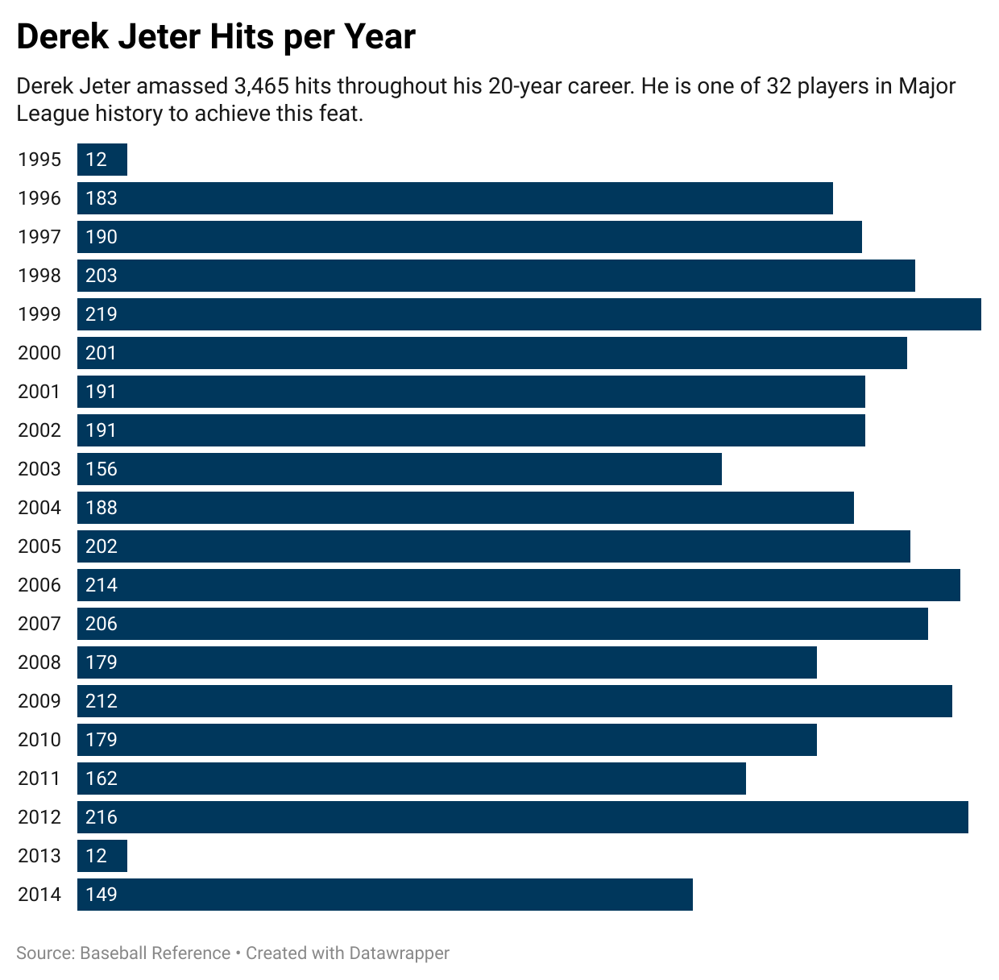

"My job is to stay positive. My job is to limit distractions. And if you get annoyed by that, I don’t expect you to understand because you’re not in my shoes."
In the rare moments when he reflects on his career, as on this September afternoon before his last game in Baltimore’s Camden Yards, or when he has neither bat nor glove in hand, Derek Jeter absentmindedly pulls on the bill of his cap with two hands, thumbs on the underside, fingers atop. There it is again. Even the small idiosyncrasies of Jeter have become so well-known.
He is sitting in a golf cart outside the Yankees’ clubhouse, fresh from his daily work in the batting cage. Only two weeks remain before the most familiar baseball player there ever was plays for the final time.
“The game has changed a lot,” he says. “The way the game is played. Now it’s more analytics and shifts and tendencies and pitch counts, and that really didn’t exist when I first came up.”
Is that a change for the better?” I ask him.
“It’s just change,” he says, and then even he has to mock his diplomacy with a smile and a laugh. “It’s a change, yeah.”
“What about change off the field?”
“You have to assume that everything you do is public knowledge,” he says. “Everything. Because now everyone is a reporter. Everyone is a photographer. Someone can take a picture and make a story, which has happened plenty of times, and twist it and turn it anyway they want to. You used to be able to go out . . . it’s all I’ve known. I’ve been here since I was 20.”
He tugs on the brim of his cap.
Derek Jeter may not be as famous in the legendary sense as Babe Ruth or Willie Mays, but he is the most familiar player there ever was, because no other ballplayer spent more time in the public eye than Jeter. He is the most influential and popular player in the sport’s greatest era of growth. It’s not just that he has gotten the most hits and played the most games since the 1994–95 players’ strike. It’s also that he grew up as a champion New York Yankee, spending nearly every October on national television. With the help of an expanded postseason and the last foreseeable dynasty, Jeter played nearly an entire season’s worth of playoff games—158, more than anybody in history. He played 71 times on Sunday Night Baseball, also more than any other player. He has hits in 42 different ballparks. His number 2 jersey has been the top-selling jersey in baseball in six of the past seven years, missing the mark only during his injury-shortened 2013 season.
No one has been covered more or played in front of more people—either live or on a screen of some kind. Hence the familiarity with all things Jeter. It’s not just the Brim Tug. So much about him is famous enough to be recognizable by shorthand. The Maier Homer. The Flip. The Dive. Mr. November. The Jump Throw. The Jeterian Swing. The Homer for 3,000. The Five Rings. The Fist Pump. Captain Clutch. Number 2.
Many of those who would be Jeter fell hard around him. Five of the top 10 vote-getters for the 2002 All-Star Game (the last season before PED testing) would be tainted by connections to steroid use. Meanwhile, Jeter arrived in the nation’s largest media market at the age of 20 and put in 20 seasons there. The only other baseball player to last 20 years in New York is Mel Ott, and he was finished with the Giants in 1947, before the World Series was broadcast on national television.
Jeter played his first game in 1995, two years after the Web browser was introduced; he won his first championship in ’96, the year of the first high-definition broadcast; he was named to his first All-Star Game in ’98, the year Google was founded; he was third in the American League MVP voting in ’99, the year the commercial camera phone was introduced; he won the World Series MVP in 2000, as the Yankees began to form the YES Network; he notched his 2,000th hit in 2006, the first season with TMZ and Twitter.
Yet here he stands, through two decades in Gotham—during the ascent of an information age that devalues privacy and discretion—with integrity intact, hardly a scratch on him. The element most associated with Jeter is winning: Over the past 100 years only Pete Rose, Hank Aaron and Carl Yastrzem ski played in more wins than Jeter’s 1,722 regular and postseason victories, and combined they have fewer World Series rings. But a close second on Jeter’s career marquee is the way he kept above the fray. “At times probably a lot of the media gets frustrated with me,” he says. “But for me the only way I’m able to operate here for this long is I don’t like negativity. I don’t like to talk about it. I don’t like to answer questions about it.
“I always hear people say I give the same answers or I don’t give you much. No, I just don’t give you much negativity. When people are negative a lot, it starts to creep into your mind, and then you start having doubts, and I don’t like that. If there’s another way, show me. My job is to stay positive. My job is to limit distractions. And if you get annoyed by that, I don’t expect you to understand because you’re not in my shoes.”
The last days of Jeter’s career have been a celebration of what he represents, especially with his .255 batting average for the worst Yankees team in 22 years providing few current highlights. Fans in Arlington, Texas, cheered wildly when a call was reversed against their Rangers in favor of Jeter’s getting a hit. Fans in Kansas City gave him a standing ovation after his final at bat there, a groundout. Baltimore fans ran down aisles in droves to snap his picture as he stood in the on-deck circle. Fortune ranked him the 11th greatest leader in the world, 22 spots ahead of Apple CEO Tim Cook. Astronauts in the International Space Station tipped their caps to him in zero gravity. Gene Simmons of the rock group KISS called him “a very powerful and attractive man.” A New Jersey farmer created a five-acre corn maze in the shape of his face. His game-used uniforms are selling for $25,000.
How could the most familiar of all players have held up this long and this well? I sat with him for a series of exclusive interviews in his last month as a player to search for explanations—to have Jeter explain Jeter.
"You learn what’s best for you. I’ve always been a believer in hard work and no excuses. I would never want to play a game and be unsuccessful and think, 'Well, I could have been successful if I had done this.""
The day Jeter reported to the Gulf Coast League Yankees in Tampa in 1992 he found himself standing over a bin filled with wood bats. Jeter, the Yankees’ first-round draft choice and sixth overall, had used only a metal bat at Central High School in Kalamazoo, Mich. He picked through the wood bats until he found one that in size and shape most resembled what he’d swung in high school. It was a Louisville Slugger P72, a model first crafted in 1954 for a minor leaguer named Les Pinkham. This one was 34 inches long and weighed 32 ounces.
From that first day in pro ball to what will be his last, covering more than 15,000 turns at bat, Jeter never used another model. “Maybe I’d pick up another one in batting practice if I broke one,” he says. “But I’ve never had an at bat in a game with another one.”

Once you know that hitters often treat their bats the way middle schoolers do the objects of their affection, you understand how downright odd it is that Jeter never tried a different bat from age 18 to 40. “The thing I’ll tell my grandkids about with Derek is how much I learned about the importance of routine,” says Yankees catcher Brian McCann. “He is fanatical about preparation. He does the same thing every day: his work in the cage, his ground balls, his BP. He never deviates.”
I ask Jeter who influenced this belief in routine.
“No one,” he says. “You learn what’s best for you. I’ve always been a believer in hard work and no excuses. I would never want to play a game and be unsuccessful and think, 'Well, I could have been successful if I had done this. You know how sometimes we don’t have BP and they make it optional? It’s usually optional because I want to hit.'”
If a praying mantis could swing a baseball bat, it would hit like Jeter. His swing is a series of bent limbs folding and unfolding around a torso bent at the waist that falls toward the plate. His left foot comes up and down twice. His hands dip the bat barrel back slightly before it comes forward. His left elbow flies out. The last guy to put up such great numbers with such an unorthodox swing was Arnold Palmer.
An influence: Gary Denbo. He was Jeter’s first manager, during that summer of 1992. Denbo didn’t try to change Jeter’s swing. “He saw what I was and just tried to make it better,” Jeter says. Except for five seasons when Denbo was with other organizations, Jeter has worked with him every off-season.
Another influence: Gerald Williams. The Yankees invited Jeter to his first major league spring training in his second season out of high school. The ’93 Yankees were loaded with veterans who enjoyed picking on young players. Jeter didn’t know any of them. Williams, 26 then, looked out for the 18-year-old Jeter like a big brother, always ready with counsel and encouragement.
The Yankees assigned Jeter that year to Greensboro, where he committed 56 errors, and then to the Instructional League in Tampa. Because of an injury to his left hand, Jeter was unable to hit in Tampa. It became a six-week defensive boot camp under another influence, coach Brian Butterfield. Butterfield changed the way Jeter threw (shortening his arm swing so that he didn’t drop the ball below his waist) and the way he caught (showing him how to “take” the baseball rather than always catching it with “give”).
“It was six weeks of only defense,” Jeter says. “It turned my career around.”
Jeter made his big league debut two years later, playing 15 games in 1995. The next season, when Joe Torre replaced Buck Showalter as Yankees manager, New York had its starting shortstop for the next 19 years. Jeter was assigned a locker in the same row as a 36-year-old outfielder who came to the park every day with a smile, even though he was a seven-time All-Star reduced to part-time work. Tim Raines, the one Yankee who could laugh off a slump or needle Paul O’Neill about beating up a watercooler, became another influence.
“I learned from him to have fun,” Jeter says. “He had fun every day. That’s a big part of being able to play all those years: to enjoy yourself.”
“One of the biggest things about leadership is you have to get to know your teammates. You have to get to know who you’re leading because there’s different buttons you push with different people."
The only time Jeter left a postseason game before the eighth inning was when the Yankees had a chance to win the 2001 World Series in Phoenix. Their Game 6 potential clincher deteriorated rapidly when the Diamondbacks hit Andy Pettitte like they knew what was coming. It turns out they did: Pettitte was tipping his pitches. The score was 4–0 when Torre replaced him in the third inning with a journeyman reliever named Jay Witasick. Eight of the next nine batters raked Witasick for hits. By the time Torre pulled Witasick, it was 13–0; the game was so hopeless that in the fifth Torre pulled Jeter, catcher Jorge Posada and first baseman Tino Martinez. Jeter left the dugout for his locker to change from his metal spikes to turf shoes. Witasick, who had allowed eight earned runs, still the most in World Series history, sat in the training room. What Jeter heard from him there infuriated him.
“Well,” the pitcher said, “at least I had fun.”
“What!” Jeter shouted. Posada would later say that Jeter “jumped all over” the pitcher: “That was the angriest I’ve ever seen him.”
Witasick had violated a core Jeter belief: He took losing too easily. I asked Jeter if it bothered him when teammates didn’t want to win as badly as he did. “Of course,” he says. “I think most people want to win at anything. But the thing that separates you is if losing bothers you.”
I ask him if he can change a teammate in that regard.
“I don’t think so,” he says. “Either something means something to you or it doesn’t. I don’t think you can teach someone to have something mean something to them, do you know what I mean?”
Jeter grew up in a Yankees minor league system in which winning was more important than player development. For instance, the catering for Jeter’s Rookie League team in Tampa—strip steak, meatloaf, corn dogs—depended on how well the team was playing. “Losing really bothered the Boss,” Jeter says, referring to late Yankees owner George Steinbrenner. “It was stressed—preached to us—on every level of the minor league system that winning was the most important thing, which is why I always got along so well with the Boss. We had the same mind-set.”
Truth is, Jeter was wired to win before he went to work for Steinbrenner. “I probably got it from my dad,” he says. “He used to beat me at everything when I was younger. He never let me win. No, no, no, not at all. You’ve got to earn it. Things aren’t given to you.”
Today we are sitting on midnight-blue leather chairs in a room off the home clubhouse at Yankee Stadium. Some of Jeter’s most important work is done in these rare rooms where cameras still don’t venture. The space is important to Jeter because he knows he can’t win by himself. His gift is getting others to buy into the group concept of winning. It’s the Dwight D. Eisenhower view of leadership: not the simple execution of authority but, as the former president put it, “the art of getting someone else to do something that you want done because he wants to do it.”
Getting a team to buy into everything it needs to do to win is what drives Jeter. This is apparent when I ask him what he will miss most about baseball. “Competing with your teammates,” he says. “One of the biggest things about leadership is you have to get to know your teammates. You have to get to know who you’re leading because there’s different buttons you push with different people. Some guys you can yell and scream at, and some guys you have to put your arm around. You can do that only if you get to know them as people.”
I remind Jeter about his reputation for how he treats teammates, media members or associates who cross him. Jeter is said to draw a clear line when it comes to loyalty. Cross it once—dare to wrong him—and he coldly wants nothing more to do with the offender. You’re off his team for good.
“Yeah, I’ve heard that about myself,” he says. “But like what? You have to give me an example.”
I bring up Chad Curtis, a former teammate. In 1999 the Yankees and the Mariners engaged in a nasty bench-clearing brawl. As players and coaches were being separated, Jeter and Alex Rodriguez, then with Seattle, were smiling and chatting with one another. Curtis engaged in an argument with Jeter in the dugout, then continued chastising him after the game in the clubhouse and in front of reporters. Four months later the Yankees traded Curtis to Texas for two minor leaguers.
“Now, see, don’t even bring him up,” Jeter says of Curtis, who last year was sentenced to seven to 15 years in prison for six counts of criminal sexual conduct. “I’m not going to throw stones when he’s down. People think [about my reputation], ‘Oh, there’s one little incident and he’s done with him.’ No. You may not know it because I choose not to speak about it, and if someone does something, they’re not going to tell you about it. So there’s more to stories.”
So I try again. I mention Rodriguez. The two of them were close as young players. Then in 2001, Rodriguez took an unprovoked shot at Jeter in an Esquire story: “Jeter’s been blessed with great talent all around him. He’s never had to lead. . . . You go into New York, you wanna stop Bernie [Williams] and O’Neill. You never say, Don’t let Derek beat you. He’s never your concern.”
Rodriguez would later admit to using steroids at the time. He became Jeter’s teammate in 2004; their relationship was cordial but lukewarm. Rodriguez was banned from baseball in Jeter’s final season for his continued use of performance-enhancing drugs.
“Don’t bring it up,” Jeter says quietly, motioning to turn off the tape recorder. He has to go now. It’s time to hit.
"You do things over and over again, and when you get in a situation you like to think it comes natural. I think there has to be a mind-set that you’re not afraid to fail. I’m not afraid to fail."
Dodgers scout, Andy High, filed this report on the Yankees great in his last month:
“He can’t stop quickly and throw hard. You can take the extra base on him. . . . He can’t run and won’t bunt. . . . His reflexes are very slow, and he can’t pull a good fastball at all.” Two months after the report ran in the Oct. 22, 1951, issue of Life magazine, Joe DiMaggio retired. DiMaggio hit .263 that season, 62 points below his career average. He was 36, complaining as he left how the introduction of night baseball took years off his career.
I ask Jeter what he will miss the least about baseball. “The schedule,” he says. “I won’t miss that. I mean, eight o’clock game tonight, we get into Tampa at four in the morning and we have to play another game? No, I won’t miss that.”
This year Jeter launched his own imprint with Simon & Schuster, Jeter Publishing. This week it released its first title, The Contract, an inspirational novel for young readers based on his childhood. He still wants to own a major league team someday. But, next year?
“That’s the beauty of it. I don’t know,” he says. “You know what I want to do? Wake up one weekend and not have to go anywhere and do nothing.
“There are things I want to do in the future. But I think for me I need to get away for a while first. Come see me in eight months, and then maybe I can answer that question.”
At the moment he is occupied with trying to scratch out a few hits. Ballplayers, even the greatest of them, make for lousy novelists: They write terrible endings. Ruth quit midseason in 1935 with a .181 average. Mickey Mantle was a .237 hitter on his way out in ’68. Mike Schmidt, hitting .203, suddenly left in tears on an ’89 road trip. Cal Ripken hit .239 in his exit year of 2001.
Jeter is no different, except for how much he has played this season: 139 games. Only four Hall of Famers ever played more in their last year: Jesse Burkett of the 1905 Red Sox (148), Al Kaline of the ’74 Tigers (147), George Brett of the ’93 Royals (145) and Mantle (144). None of them hit better than .266.
The slow, painful death of a baseball career eventually fades from memory, as it did for the Mick and DiMag and the rest, and in our minds we keep them forever young. For Jeter, the apex of his youthful skills and his mastery in the spotlight was Oct. 26, 2000. It was the night the Yankees won a contentious, nerve-jangling, all–New York World Series against the Mets.
The Mets had seized momentum in the Series with a win in Game 3. Shortly before Jeter came to bat to begin Game 4, he smiled at Torre and said, “Don’t worry, Mr. T, I got ya.” Then he hit the first pitch of the game for a home run. The Yankees won 3–2. They were losing Game 5 in the sixth inning 2–1 when Jeter did it again, homering to tie the score. His postseason games were beginning to look as predictable as a MacGyver episode.
Jeter had become a regular of fall prime-time programming. October night after October night, there he was in the middle of a rally with the same twinkle in his eye he showed Torre, as if he had the advantage of having read the script ahead of time. It wasn’t always that way. In his first postseason game, a loss against Texas in the 1996 ALDS, Jeter ended three innings with a total of six runners on before managing a hit his last time up. “Everyone wrote I was nervous and overmatched because I was a rookie,” he says. “Too many people look at the result, and they want to make an issue of how someone is feeling inside. It just wasn’t meant to be.”
Torre still was learning about his rookie shortstop then. He wasn’t sure if he needed to talk to the kid, settle him down. He kicked around the idea in his head until Jeter happened to walk past his office on his way out of the clubhouse that night. Jeter stuck his head into the doorway.
“Hey, Mr. T, make sure you get some sleep,” Jeter said with that twinkle. “Tomorrow’s the biggest game of your life.”
Torre smiled and shook his head at the kid’s confidence. The next night Jeter went 3 for 5, and the Yankees won 5–4. Beginning that night and up until the 2001 World Series, the Yankees won 76% of their postseason games (53–17) and 93% of their postseason series (14–1). Jeter batted .320 in that stretch.
Jeter is a career .310 hitter in the regular season and a .308 hitter in the postseason. He plays in the vein of Ernest Hemingway’s answer when Dorothy Parker asked him, “Exactly what do you mean by guts?” Replied Hemingway, “I mean grace under pressure.”
“I think part of that is focus,” Jeter says. “So is work ethic. You do things over and over again, and when you get in a situation you like to think it comes natural. I think there has to be a mind-set that you’re not afraid to fail. I’m not afraid to fail. I’ve done it quite a bit. The calmer you are, the more the game slows down for you, and I think part of that is controlling your emotions.”
I go back to the night of Oct. 26, 2000, the apex. It wasn’t just the home run, or that he had just become the first man to be named the MVP of the All-Star Game and the World Series in the same year. I walked out of the park with Jeter that night, exiting by way of the warning track in leftfield and out a gate in centerfield. Dressed in a slick, quicksilver suit with a silk white T-shirt beneath, he walked past New York City mayor Rudy Giuliani, who was playing catch in the Yankees’ bullpen, and Placido Domingo, who was in leftfield giddily shouting to Jeter that he had called his home run, and headed to a car to meet his date, Miss Universe, for a party at a Manhattan nightclub that would run until 5 a.m. in which people paid $12,000 to reserve a table in the inner sanctum near Jeter. He was 26 years old and already a four-time world champion. It was as dizzying as a Fellini movie, only real. Yet Jeter somehow stayed on balance. How could he do it?
That night at the club, trying to shout above the music and into his ear, I told Jeter that I needed to arrange an interview with him. He told me he would call me in two days: He was going out to dinner with his parents the day after tomorrow and would call me at 8 p.m., after they were done. While driving home that night I realized I had made a terrible mistake—he had my number, but I didn’t have his. My entire story, which now would be up against its deadline, hinged on an athlete remembering to call me two days after saying he would in the wee hours at a Manhattan nightclub. I sweated out two days.
And then, precisely at 8 p.m. on the second night, my phone rang. It was Jeter: Dinner with Mom and Dad was great; meet me at my apartment.
Who does that? Who wins the World Series MVP, dates Miss Universe, eats dinner with his parents, remembers to call a reporter and—the first thing I noticed when I walked through his door was an ironing board, iron still at the ready—presses his own clothes? This is who: Dot and Charles’s son.
Dot grew up as one of 14 children of a white church handyman in New Jersey. Charles, who is black, was raised by his mother in Alabama and became a substance-abuse counselor. They never permitted Derek to use the word can’t around the house. Anything was possible with hard work. There is no doubting whence comes his distaste for negativity.
“My parents are probably the most positive people you’ll meet,” Jeter says. “They’re good to talk to, especially when you’re struggling. They try to find something good that you’ve done. You could be 0 for 100, and it’s, ‘Oh, you’ll get ’em tomorrow. You had some good swings.’ And even though you may have been thinking, ‘I did have some good swings,’ it feels good to hear someone say it.”
Dot and Charles still go to many of their son’s games. “It means a lot,” Jeter says. “It’s a comforting thing. It sounds funny saying that—I’m 40 years old now! They’re not there all the time, but when they’re there, I always know where they are.”

“I always dreamed of playing in the major leagues. But everything that comes along with it couldn’t have possibly been part of the dream. Because it’s been much better.”
It is beginning to come into focus. How many people influence a public life? “Oh, man, if I named them all, you’d have two pages just of names,” he says. “You know, like the movie credits that roll at the end.” But look back at the names he did bring up, and there is a theme. They all go back to before he became so familiar: Denbo, Butterfield, Williams, Raines, Torre.
Then I come across this: a former teammate, Matt Ruoff, this month telling The Press Democrat of Santa Rosa, Calif., “You always wanted to sit by him. I know that sounds weird. But Derek gave off a presence.” Ruoff told a story about how Jeter went to the mound one time when one of the Yankees’ pitchers was struggling and said, “You got nothing to lose. Stay with your changeup and curve. Give me some ground balls. You’re putting me to sleep out there.”
Here’s the kicker: These were the Gulf Coast League Yankees of 1992. The story could have been told by a teammate in 2014.
That’s how you prosper across two decades in New York as the most familiar player there ever was: You were nearly fully formed before the klieg lights hit. The mortar of the man had set.
This season has been one long goodbye for Jeter. The Yankees threw a day for him on Sept. 7, when he thanked the fans for doing more for him than he did for them. “Did you see my hand shaking?” he says. “I was nervous. I get nervous quite a bit. I just hide it. I get butterflies before every game. It means you care.”
It’s not just the fans in New York. Every last stop for Jeter has brought an outpouring of thanks from fans.
“It’s been surreal,” Jeter says. “I’d be lying if I said it didn’t feel good, because I guess they appreciate how you played. But more importantly, if you’re an Orioles fan, a Rays fan, a Tigers fan, and you’ve been going to games over the last 20 years, whether they beat us or we beat them, there’s a good chance that I was a part of it. And our job—we’re playing a game—but our job is to entertain and bring joy to people, and I think people have appreciated it.
“I always dreamed of playing in the major leagues. But everything that comes along with it couldn’t have possibly been part of the dream. Because it’s been much better.”
The last ovation will come on Sept. 28 at Fenway Park in Boston. All these people in all these cities are cheering not just a career with more base hits than all but five men who ever played the game. They also are cheering how he did it. And when they do, they also are cheering how Dot and Charles prepared him for the most brightly lit baseball life there ever was.